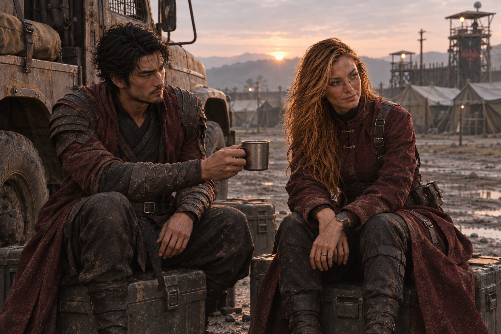

MEMÓRIAS COMPARTILHADAS // BC-05 + BL
Britney e Bobby
entre uma rota e outra.
O vínculo deles não nasceu pronto. Começou nas confraternizações de Jack, cresceu devagar e resistiu às escolhas difíceis que vieram depois.
REGISTRO 01 // ROTA COMPARTILHADAAntes de confiar numa rota, eles conferiam o mapa juntos — cada um procurando o que o outro talvez não visse.

REGISTRO 02 // DEPOIS DA PATRULHAEle não perguntou quanto ela temera a rota. Só ofereceu água e ficou ao lado enquanto ela examinava o horizonte.
BC-05 // ARQUIVO FOTOGRÁFICO
Memórias do tempo
Registros do presente de Britney: a câmera que ela carregava virou prova, mapa e lembrança de quem ainda está aqui.
Abrir álbum de rastros →